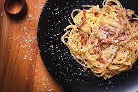

Spaghetti Carbonara

Description
An absolute classic, carbonara uses only bacon, eggs, parmesan cheese and
cooking water to hit the spot. Ah, a little wine when browning the bacon makes a difference
Ingredients
- 200 g spaghetti
- ½ cup (tea) diced bacon (75 g)
- ¼ cup white wine (tea)
- 2 eggs
- 2 yolks
- ½ cup Parmesan cheese (grated)
- salt and freshly ground black pepper to taste
- Bring a medium pot with 2 liters of water to high heat. When it boils, add 1 tablespoon of salt,
add the pasta and mix. Cook for the time indicated on the package or until al dente.
- While the pasta is cooking, prepare the other ingredients. In a small bowl break one egg at a time
and transfer to another bowl (remember: there are 2 whole eggs and 2 yolks; you can reserve the whites
in the fridge for two days or, better yet, freeze them to use later). Add the grated parmesan cheese
and beat well with a fork to mix.
- Place a large skillet over medium heat. When hot, brown the bacon for about 5 minutes, stirring
occasionally. Lower the heat, pour in the white wine, being careful not to splash it, mix well and turn off the heat.
- Once the pasta is cooked, reserve 1 cup (tea) of the cooking water.
- Now you'll need to do everything very quickly: drain the water, transfer the pasta to the skillet with the hot bacon,
add the eggs and mix well, the idea is that the heat of the pasta cooks the eggs, forming a cream. Return the skillet to
a very low heat and gradually add the reserved cooking water, stirring with a spatula for a few minutes until a thick sauce forms.
Be careful not to overcook the eggs. Serve next with kingdom pepper to taste.
Home